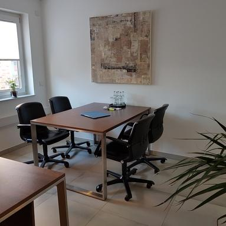
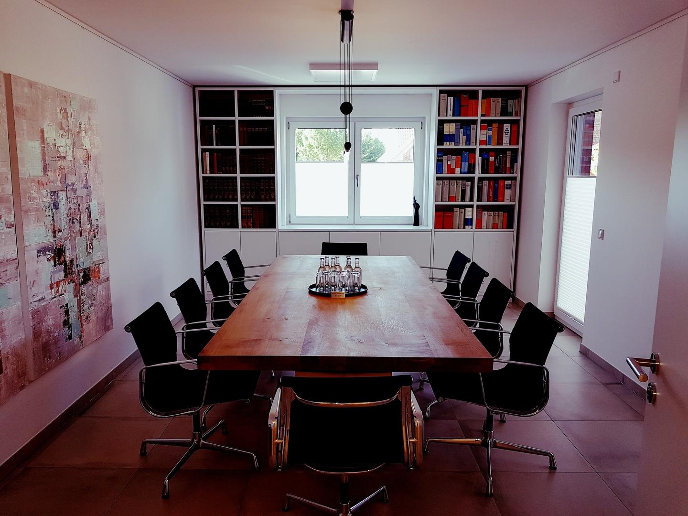
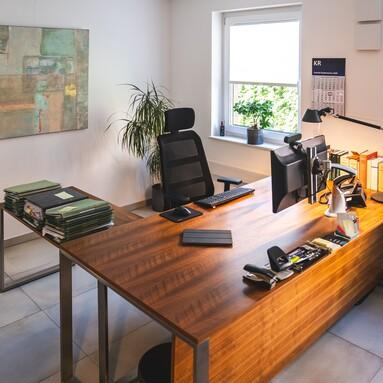
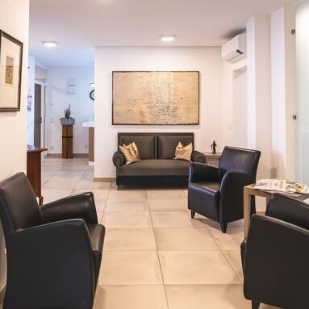

Die Büroräumlichkeit in der Kanzleistraße 12 ist die organisatorische Basis für Planung, Verwaltung, Besprechungen und Vorbereitung der Vereinsarbeit.
Adresse
Kanzleistraße 12 95444 Bayreuth
Von hier aus koordiniert Africa-Aid-Bayreuth e.V. die lokale Vereinsarbeit: Projektabstimmungen, Spendenkommunikation, Einsatzvorbereitung, Verwaltung und interne Besprechungen laufen an dieser Adresse zusammen.
Ein Standort für Empfang, Planung und gemeinsame Entscheidungen
Die Räume sind bewusst funktional gedacht. Sie sollen Besuch empfangen, vertrauliche Abstimmungen ermöglichen, Unterlagen geordnet halten und größere Gesprächsrunden aufnehmen. So entsteht in Bayreuth ein klarer Ankerpunkt, während die Projekte selbst in den Einsatzländern vorbereitet und begleitet werden.
Einblicke
Büroräume an der Kanzleistraße
Die folgenden Aufnahmen zeigen die lokale Arbeitsumgebung des Vereins: Empfang, Arbeitsbereiche und Räume für Abstimmung, Vorbereitung und Gespräche.

Empfang und erster Eindruck der Büroräume

Bereich für Verwaltung und laufende Abstimmungen

Räume für Projektplanung und Vorbereitung

Konferenzbereich für Sitzungen und Gespräche
Raumaufteilung
So ist die lokale Adresse aufgebaut
01
Flur mit Rezeption
Der Eingangsbereich dient als erster Anlaufpunkt für Besucherinnen und Besucher, Lieferungen, Gesprächstermine und Vereinskontakte. Der Flur mit Rezeption schafft Orientierung und trennt den öffentlichen Empfang vom konzentrierten Arbeiten in den Büros.
02
Büro für Verwaltung
Das erste Büro ist für organisatorische Aufgaben vorgesehen: Korrespondenz, Dokumentation, Spendenzuordnung, Terminabstimmung und laufende Vereinsverwaltung. Hier werden die Grundlagen gepflegt, die eine verlässliche Arbeit nach außen überhaupt erst möglich machen.
03
Büro für Projekte
Das zweite Büro bietet Raum für Projektplanung, Einsatzvorbereitung, technische Rücksprachen, Logistikfragen und Abstimmungen mit Verantwortlichen. Es ist der ruhigere Arbeitsbereich, in dem aus Ideen konkrete nächste Schritte für Schulen, Brunnen und Infrastruktur werden.
04
Großer Konferenzraum
Der große Konferenzraum ist für Vorstandssitzungen, Arbeitsgruppen, Unterstützergespräche, Projektbesprechungen und Präsentationen vorgesehen. Hier können größere Entscheidungen vorbereitet, Materialien vorgestellt und unterschiedliche Fachbereiche zusammengebracht werden. Gerade für einen Verein mit Bau-, Pädagogik-, Logistik-, Spenden- und Verwaltungsaufgaben ist ein solcher gemeinsamer Raum wichtig, weil komplexe Projekte nur gelingen, wenn Menschen regelmäßig an einem Tisch zusammenfinden.
Warum der Standort wichtig ist
Internationale Hilfe braucht eine verlässliche Basis vor Ort
Die Projekte des Vereins richten sich auf strukturschwache Regionen Afrikas, doch die organisatorische Arbeit beginnt in Bayreuth. Ein fester Standort erleichtert Verantwortlichkeiten, macht Kommunikation verbindlicher und bietet Raum für Vorbereitung. Die lokale Adresse ist damit nicht bloß eine formale Angabe, sondern ein praktischer Arbeitsort für Menschen, Unterlagen, Gespräche und Entscheidungen.